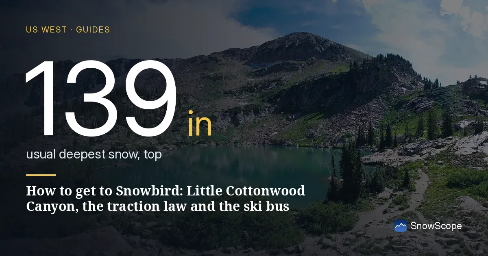

How to get to Snowbird: Little Cottonwood Canyon, the traction law and the ski bus
Snowbird sits alone at the top of Little Cottonwood Canyon (SR-210), which it shares with Alta. The single canyon road is fast on clear days and slow when storms hit, so your tyres, the time you leave, and the weather forecast shape your journey more than the distance.
See the live snow forecast for Snowbird in the SnowScope appSnow depth, powder alerts and the 3D map, free.

Where Snowbird is
Snowbird lies about 29 miles (47 km) southeast of Salt Lake City International Airport and 24 miles (39 km) from downtown. The canyon mouth starts near Sandy, 4 miles (6 km) west. Once you enter the canyon on SR-210, there is only one route in and out, so UDOT warns drivers that the road is a dead end in winter. Bring supplies and fuel for the day if you are driving.
The vertical rise from the canyon mouth to the resort is steep: about 1,600 ft (488 m) over those final miles. The drive time depends on weather and traffic, not on distance alone.

The traction law: when it applies and what tyres you need
When UDOT flashing beacons are active at the canyon entrances, the traction law takes effect on both SR-210 and SR-190. UDOT can enforce it up to 24 hours before a storm arrives. All tyres must have at least 5/32 inch (4 mm) of tread.
If your car has four-wheel or all-wheel drive, you need winter tyres (M+S rated) on all four wheels. If it is two-wheel drive, you must fit snow-rated tyres (3PMSF symbol) on all four wheels, or carry chains or snow socks for two drive wheels. Rental cars from Salt Lake City often come with all-season tyres: check the tyre rating before you book, or choose the bus instead.
Skip the car: UTA route 994 and Canyon Service buses
UTA route 994 and the Canyon Service run buses straight up Little Cottonwood Canyon to Snowbird and Alta. The ski bus schedule usually runs from early December to mid-April. If the resorts open early in the season, UTA may start buses sooner. Use the Transit app or visit UTA's website to check the timetable before you go.
On a busy powder day the bus solves two problems at once: you dodge the queue at the parking lot, and you avoid the stress of a solo drive in storm traffic. The bus leaves from the downtown Salt Lake City station and the airport.
Before you leave: check the road status
UDOT publishes a live status feed for SR-190 and SR-210 that lists closures, traction rules, and links to road cameras. If no alert appears, the roads are open with no planned restrictions. Check the feed before you leave Salt Lake City, and check it again before you descend in the afternoon.
The single canyon road fills fast in heavy snow. Leaving early on a storm day is not just about comfort: it is about not getting stuck or delayed for hours.
Why the canyon rewards the effort
The reward for driving or bussing up Little Cottonwood Canyon is depth. At mid-mountain, around 9,357 ft (2,852 m), the typical peak snow depth across past winters was 96 in (244 cm). The base sits lower, at 7,760 ft (2,365 m), where the typical peak was 52 in (133 cm). Snow lies on the ground for about 220 days each winter at mid-mountain, usually deepest in March.
Last winter (2025-26) was dry: the mid-mountain peak reached only 56 in (143 cm). But in a normal winter, the canyon catches Pacific storms and holds the snow high. The elevation gain as you climb matters—upper slopes at 10,961 ft (3,340 m) see a typical peak of 139 in (352 cm).
Tips for skiers
- Check the UDOT Cottonwood Canyons status feed on your phone before you drive up and before you drive down. A live feed beats a forecast.
- Tyres matter more than four-wheel drive. Two-wheel drive with winter tyres beats four-wheel drive with all-season tyres when traction rules apply.
- On a powder morning or in heavy snow, take the bus. You will arrive calmer, park easier, and help the canyon road move faster.
- Leave the valley early on a storm day. The single canyon road becomes slow within an hour of heavy snow.
- If you go into the backcountry from the canyon, check the Utah Avalanche Center bulletin first.
About these numbers
Resort snow depths are the deepest snow on the resort's upper slopes on the date shown; they are estimates for an area, not a measurement at one point. Forecasts can change. Always read the official avalanche bulletin before going off-piste.
Official avalanche bulletins: Utah Avalanche Center
Cite this report
For research, teaching or the press: the numbers and charts are free to reuse under CC BY 4.0 with this citation.
SnowScope (2026), How to get to Snowbird: Little Cottonwood Canyon, the traction law and the ski bus, https://snowscope.app/blog/en/2026/11/how-to-get-to-snowbird-little-cottonwood-canyon.html, accessed 2026-11-09
SnowScope (Atlas Labs). (2026, November 9). How to get to Snowbird: Little Cottonwood Canyon, the traction law and the ski bus. SnowScope snow reports. https://snowscope.app/blog/en/2026/11/how-to-get-to-snowbird-little-cottonwood-canyon.html
BibTeX
@misc{snowscope2026howtogettosnowbirdlittle,
author = {{SnowScope (Atlas Labs)}},
title = {How to get to Snowbird: Little Cottonwood Canyon, the traction law and the ski bus},
year = {2026},
month = nov,
howpublished = {\url{https://snowscope.app/blog/en/2026/11/how-to-get-to-snowbird-little-cottonwood-canyon.html}},
note = {Published 2026-11-09 18:47 UTC; accessed 2026-11-09}
}· CC BY 4.0 · Methods, data and tools →
Snowbird: snow and temperature by height, this winter vs last (tools) →
Follow Snowbird
Free: a message when fresh snow is coming, and the forecast every morning.
More snow reports

Alta's mid-mountain usually peaks near 109 in (276 cm). Our 46-winter snow history answers when to come, which height suits you, and why the road matters. Data from 2026-11-07.

Vail in numbers: a usual peak of about 64 in (162 cm) at mid-mountain over 46 past winters, March the deepest month, plus terrain, access and safety.

Steamboat, Colorado, for families: what works for toddlers, school-age kids, teens and parents, with the snow of 46 past winters at three heights.